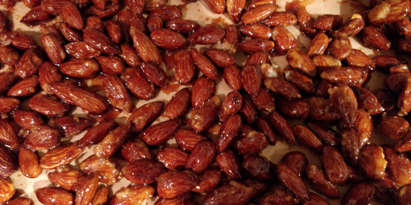

Candied Almonds★
 Vegetarian/Vegan
Vegetarian/Vegan
Spanish almond brittle

110gcaster sugar70mlwater170graw whole almonds- dash salt (optional)
1/2 tspground cinnamon (optional)
Heat a large frying pan over a low to medium heat.
Pour the water into the pan and stir in the powdered sugar until the sugar is completely absorbed.
When the sugar reaches 125 degC and has large, slow popping bubbles, reduce the heat to low
Add the salt, cinnamon (optional) and almonds and stir until coated
The liquid will crystallise around the almonds and turn sandy. Keep stirring.
Turn the heat back to medium. The sugar will eventually re-melt and turn to caramel.
Tip the almonds out of the pan onto a baking sheet lined with parchment paper to cool.